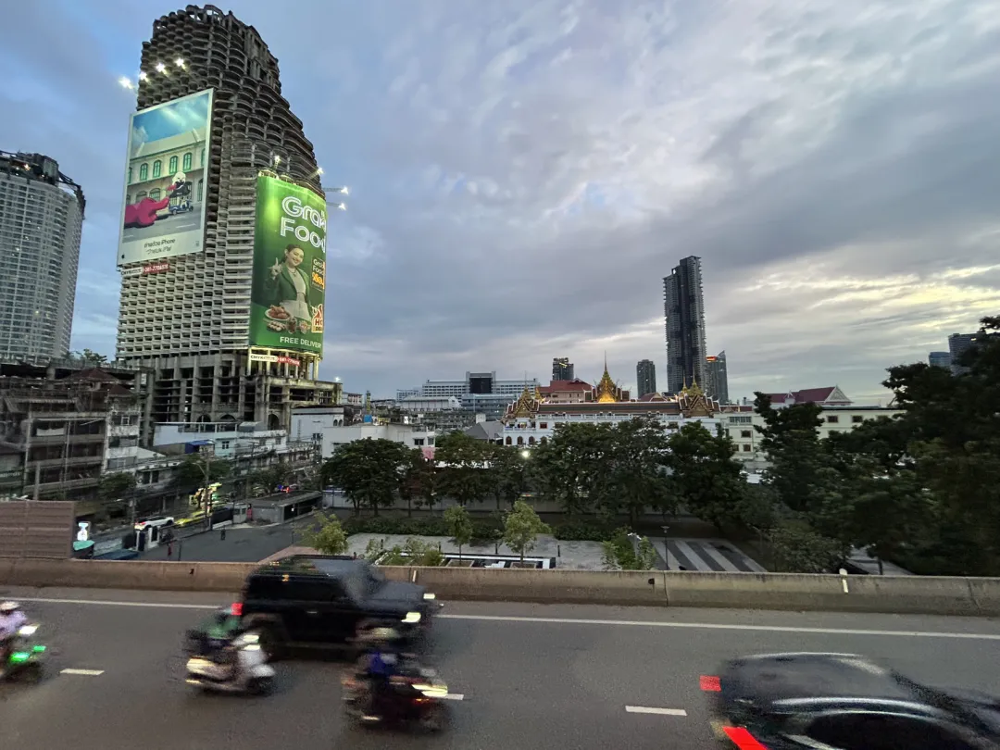
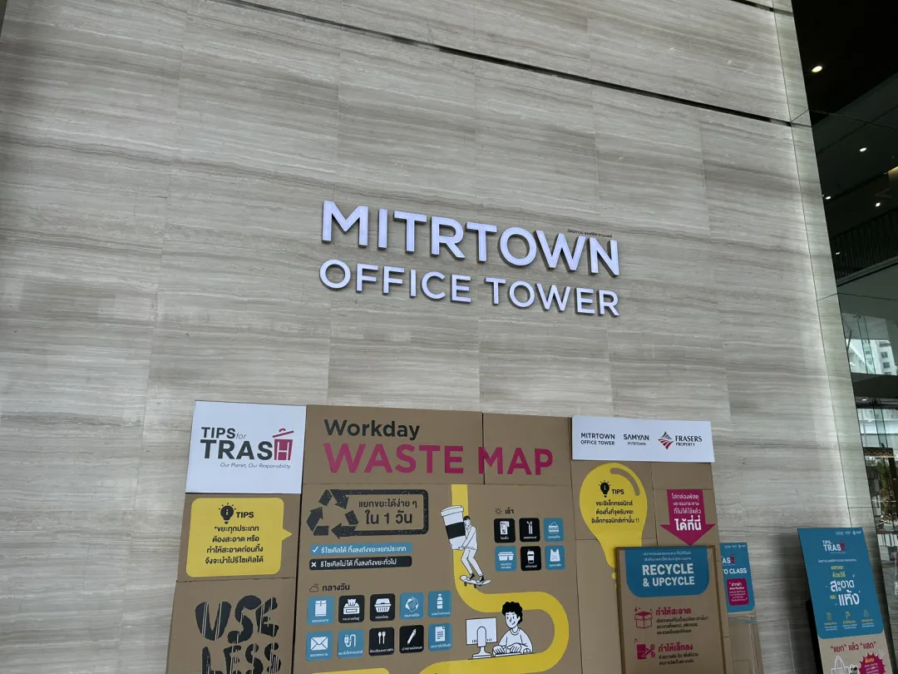
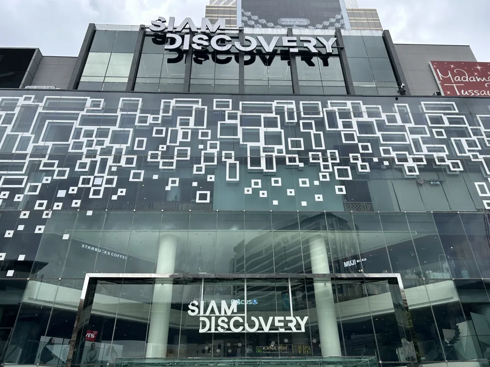
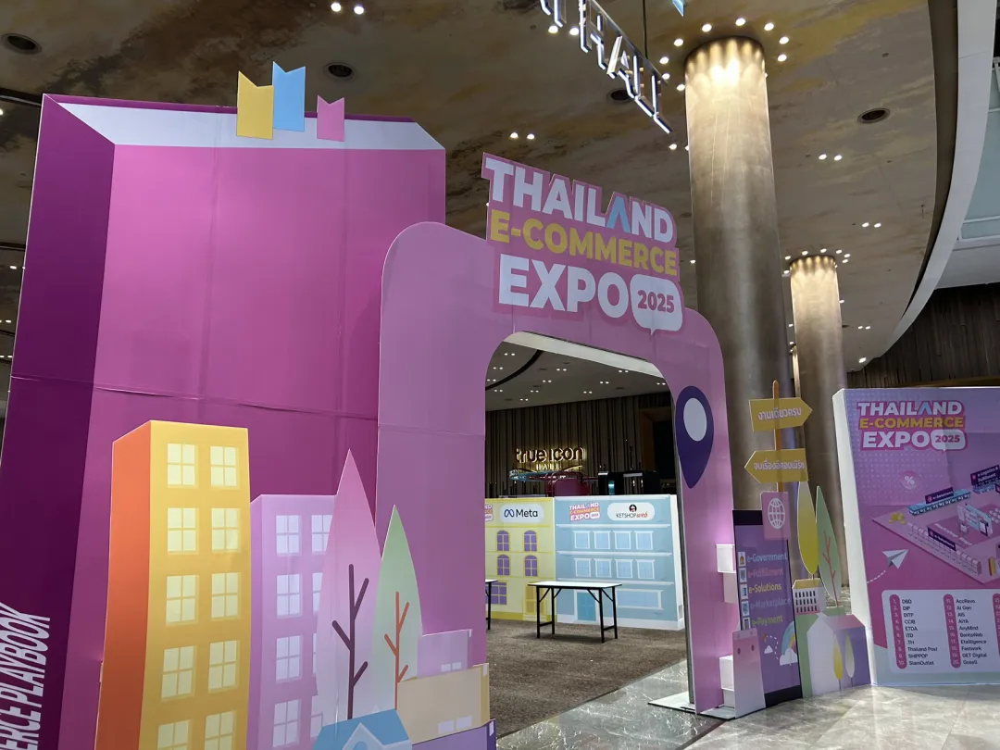
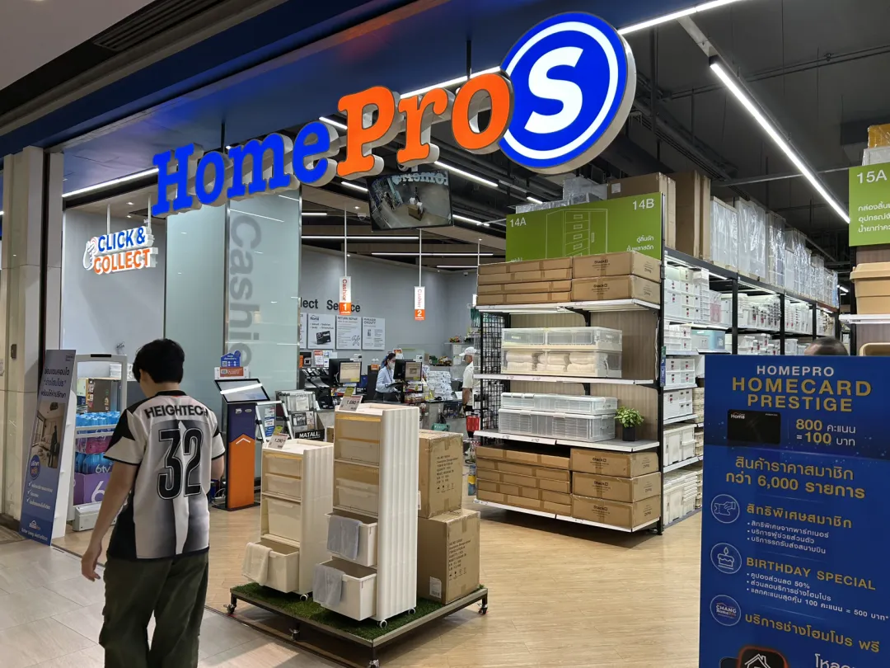
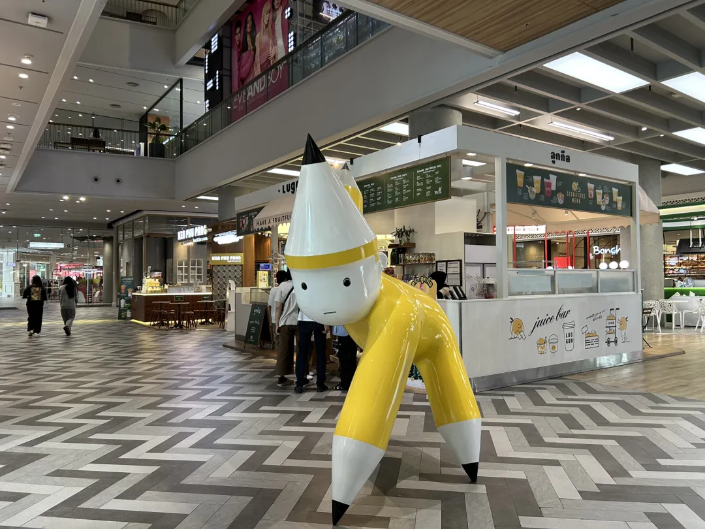
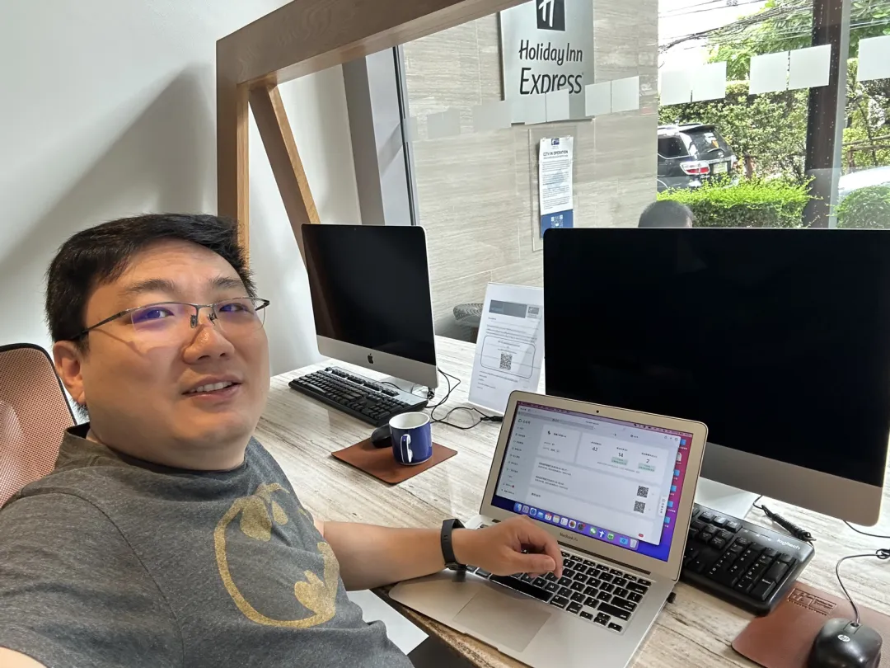

泰国曼谷产业考察｜群核科技（00068.HK）东南亚市场实践研究
Kukahome / Coohom Thailand — where China's spatial intelligence meets local conditions.
中国能力全球化 中国能力的全球化，不仅是能力外溢，也是能力的深化与优化。
8月15日，我开启了东南亚考察。首站泰国，走进杭州科技六小龙·群核科技在泰国的办公室。
几年前我提出"中国能力的全球化是未来20年中国经济的重大战略机遇"。主观上，我们有这个能力；客观上，不出去，就会少很多用武之地。
以家居设计软件为例，全球供应链重构后，从中国直接出口面临各种挑战，而在泰国等东南亚国家布局，能更好地贴近本地市场和客户需求。这导致中国企业部分产能和服务迁到泰国等地，变成泰国本地化运营。

以群核科技为例，该公司旗下国际品牌Coohom在美国纽约设有公司，并在泰国设立办事处和分支机构，支持本地化服务。
从家居设计产业看，的确是"不出海，就出局"。因为你不出去，客户就会把订单交给在海外有布局的厂商。但出了海，是不是一定能成功？
此次泰国之行让我感到，中国能力的全球化并不是能力的平移，而是原有能力与本土化条件结合后，形成一种更具融合性的新能力。
换言之，中企出海不仅是能力外溢，也是能力的深化与优化。本文就从这个角度和大家做一些分享。
— 1 — 群核科技：知识的互动
群核科技成立于2011年，致力于成为全球领先的空间智能基础设施提供商，其主要产品酷家乐是一款以实时仿真渲染为核心的空间设计软件。国际版Coohom则面向全球用户，提供3D云设计软件和渲染服务。
Coohom于2018年推出，被全球知名软件评级平台G2评为2024年度3D渲染类"领导者"、"最易实施"及"最快实施"的软件。目前，Coohom支持14种语言，覆盖美国、韩国、日本及东南亚等市场，并在泰国设立办事处和分支机构，以更好地服务本地家居零售商、制造商和室内设计师。

— 2 — 群核科技：跨文化融合
在泰国考察期间，我参观了群核科技的泰国分公司，在本地市场进行了深入交流。泰国作为东南亚家居市场的重要节点，电商和设计需求快速增长。Coohom在这里的布局，不仅是将中国成熟的AI设计技术引入，还注重与本地人才的融合。
Coohom 高度重视对本地人才的培养，把泰籍员工派到中国学习，同时从国内派干部到泰国工作。泰国员工总体稳定且敬业，执行力强，且产品都是中国的成熟产品，即设计过程中遇到的各种问题都已有解决方案，所以在泰国提供的服务品质和国内没有什么区别。

— 3 — 群核科技：泰国发展秘籍
我看到设计团队中的泰籍员工较多，问为什么？
一是泰国本地人才资源丰富，但自动化和AI技能需要时间适应；二是Coohom的平台强调用户友好性，如果把设计流程拆分得很细，一个人就负责一两个模块，变成SOP，泰国员工则完全能做到。这就可以快速复制，实现效率目标。
"造物之前，必先造人。"
分公司用了较多的本地员工，他们从基础操作学起，再向上提升。团队 leader 当教官，再加上技术工程师、市场营销人员等，一起"看护"他们。从教育训练到流程指导，再到服务交付，每个点都做好控制，让结果有保证。

— 4 — 群核科技：滚雪球成长
当泰国员工一步步成长起来，也会有一些流程改善和微创新的建议。团队不参与直接设计，也有更多时间观察、思考怎样提升效率。这些意见建议中有一部分被吸收，就成为新的作业标准，有的还能反向输出到群核科技国内。
整个过程是非常有序的，不是谁在现场想改什么就改什么。群核科技泰国搭建了一个吸纳意见的平台，把点点滴滴零碎的改善建议记录下来，进行分析。有的可以在SOP中优化，有的是针对产品的诉求，就要跟国内做开发的同事沟通，看产品设计能不能优化。
平台不只是硬件的服务器，同时还是软体，包括现场管理、系统测试、各种防呆，这和人的参与性、主动性高度相关。在实践中会沉淀出本地化的设计经验、产品经验和个人能力，与企业原有的知识体系形成互动。
对客户来说，它不关心你在杭州还是泰国运营，它要的是同样的质量。对群核科技来说，必须结合本地人才的基础和特点去塑造他们，这样在软体上才能形成竞争力。在软体方面，学管理知识会快一点，技术技能的提升则无法拔苗助长，需要更长时间的沉淀。
— 5 — 群核科技：语言问题
我在调研中还体会到语言的重要性。
简单日常沟通，用翻译软件是可以的。但要开发新功能或调整设计，各相关工种的员工需要完全理解要求才行。如果对知识和know-how驱动的行为、动作理解得不准确，服务中就可能出现严重问题。
所以，群核科技希望多招聘懂中文的员工，"有时宁愿选择一个懂中文的文科生，培训他AI设计方面的知识，还会掌握得快一点"。同时倡导泰籍干部学中文，中方干部学泰语，并不断提高泰籍干部的比例。

做空间智能服务，在不同文化和语言背景下做高质量服务，对人的要求很高。大量在人机互动、人际互动中形成的隐性知识和技能，如何沉淀为企业可留存、可分享的资产，非常关键。这是群核科技泰国分公司对我的最大启发。
— 6 — 结语
泰国作为东南亚经济体之一，近年来吸引了众多科技企业投资。
韩资如三星早在手机和家电领域布局，而苹果供应链也纷纷南移。
中美贸易摩擦后，有更多中国企业到泰国投资。中企正在带动泰国数字经济的第三波。这一次的中企出海，具有明显的产业特征，和以往贸易型、套利型、资源型等模式有很大不同。
既要靠能力打天下，还要与本地化进行很好的结合，这必然是一个长期主义的知识与技能进化过程。

从我的调研看，以"生产性创新+不断提升本地化管理运营水平"为主旋律的中国企业精细化出海时代已经到来。
我相信也祝福它们，一定能演好"中国能力的全球化"与"在全球化中深化中国能力"的二重奏。

本文内容整理自海鑫汇海外考察记录，首发于海鑫汇官方公众号（2025年8月）。 查看公众号原文 →